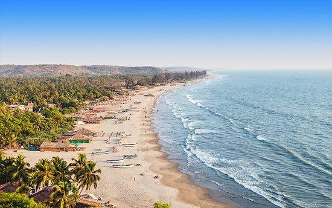
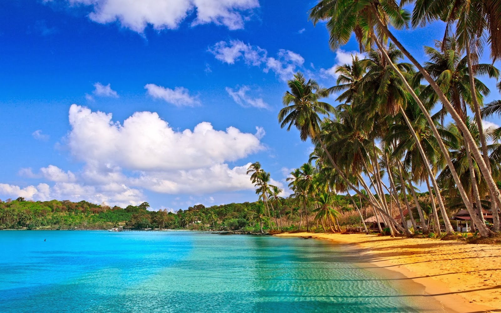

Panjim (Goa)
 City
City


Calungate Location
About Goa

it is one of the most popular tourist destinations of India with beautiful beaches and historical sites. Goa is India's richest state with highest GDP per capita.
Popular Post
 
About Calungate Beach
Distance (From Kadamba Bus Terminus): 14 Kms
Visited From: Kadamba Bus Terminus
Trip Duration (Including Travel): 2 Hours
Transportation Options: Bus / Cab / Auto / Rental Bike
Website: NA
Phone No: NA
Address: NA
Travel Tips:
1. Baga Beach (1.6 kms) can also be visited from this place.
2. Candolim Beach (5 kms) can also be visited from this place.
3. St. Alex Church (2.1 kms) can also be visited from this place.
4. Our Lady of Piety Church (0.8 kms) can also be visited from this place.
5. Sinquerim Beach (7 kms), Mae De Deus Church, Saligao (4.5 kms)can also be visited from this place.